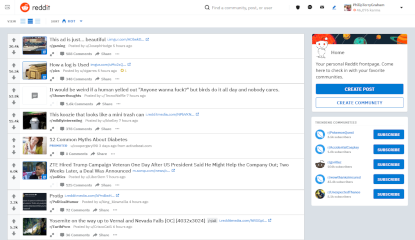

Front page
Overview
Reddit is a site made of numerous boards or “subreddits” which users can post on. Different subreddits can be found under “categories” on the main page. On the front page, users can see r/all, which is a board composed of all the other public boards upon which any and every post can be seen. The posts on every subreddit are put in order based on the score the post has. Other users control the score of a post using upvotes and downvotes.
As with many other sites with white backgrounds, such as YouTube, the dark mode is significantly more popular than the light mode, but light mode is still the default. Otherwise, the way Reddit is laid out makes it easy to look at and read.
The communities on Reddit are highly varied. Subreddits exist for nearly any conceivable topic including memes, knitting, thoughts people have in the shower, flag-making, and more. Due to the presence of moderators, people on the subreddits can’t get too out of hand. However, not much can be said about Reddit in general, you have to look at the subreddits individually.
Score
| Criteria | Score |
|---|---|
| User friendliness | 9/10 |
| Appearance | 8/10 |
| Community | 6/10 |